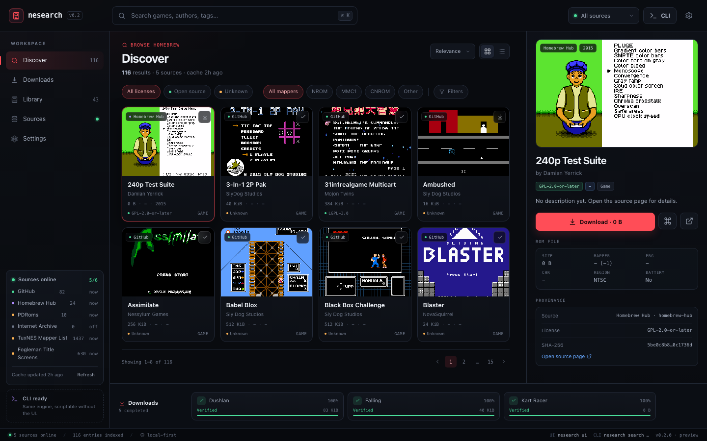
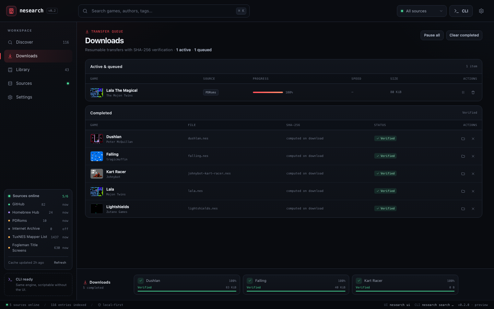
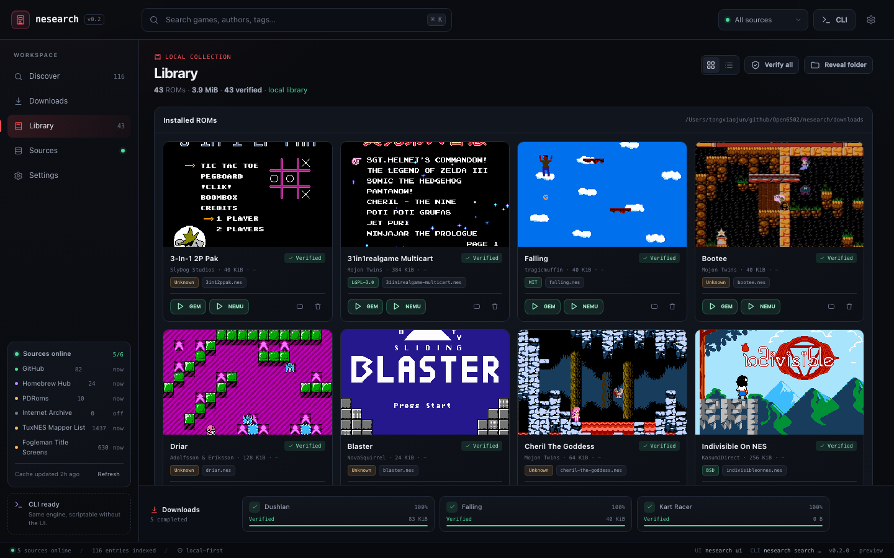
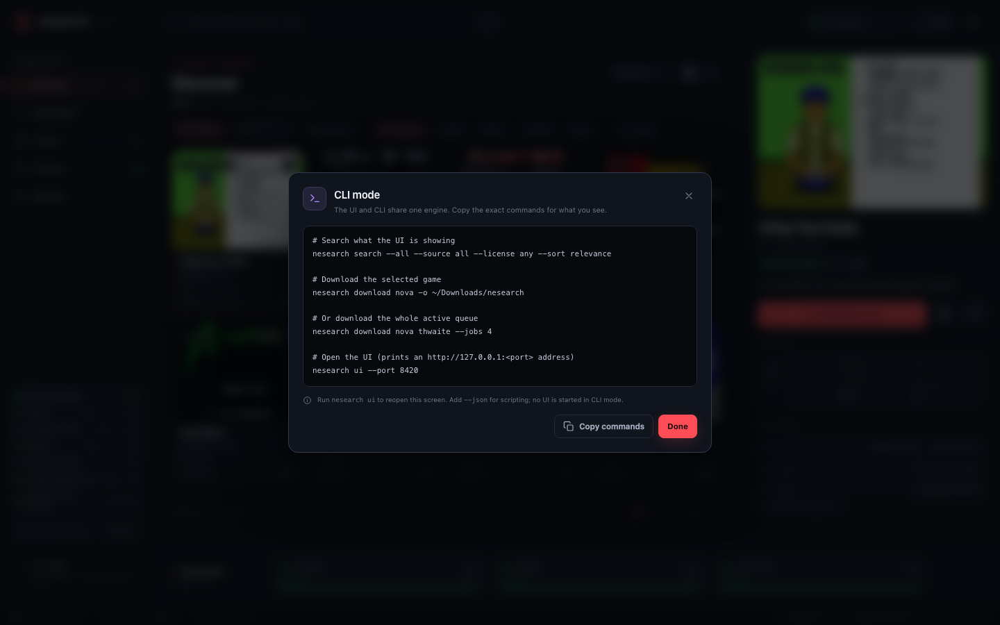
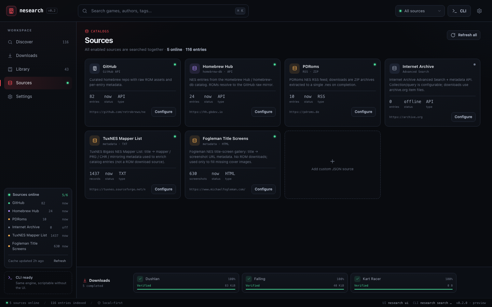

六个目录，一个列表
GitHub retrobrews、Homebrew Hub、PDRoms、Internet Archive，外加 TuxNES mapper 与 Fogleman 封面元数据。
一个用 C++20 写的 NES 游戏目录浏览器：六个数据源、支持断点续传和 SHA-256/iNES 校验的下载、本地游戏库，以及随包的 GEM6502 / NEMU 一键启动。同时提供 CLI 和本地 Web UI。

GitHub retrobrews、Homebrew Hub、PDRoms、Internet Archive，外加 TuxNES mapper 与 Fogleman 封面元数据。
CLI 和只监听 loopback 的 Web UI 共用同一套目录、下载与游戏库服务。
断点续传、重试、原子改名、iNES 解析和 SHA-256 校验，通过后才进入游戏库。
网格/列表视图、搜索、校验、删除，索引就是一个普通 JSON 文件。
macOS 包内置 GEM6502 和 NEMU/6502EMU，点 Play 即可启动，无需配置路径。
填入自定义 JSON 源，测试连接后与内置源合并进同一套搜索。




| 来源 | 数量 |
|---|---|
| GitHub retrobrews/nes-games | 82 |
| Homebrew Hub / nesdev-org | 24 |
| PDRoms NES RSS | 10 |
| Internet Archive | 视网络 |
| TuxNES mapper 列表 | 1,437 |
| Fogleman 封面 | 630 |
数量来自 v0.2.0 目录快照。Internet Archive 是否可用取决于网络；PDRoms 目前只取最新 10 条 RSS。
./run-ui.command./nesearch update
./nesearch search falling
./nesearch download falling -o ~/Downloadsnesearch 是 Open6502 项目的一部分。NEMU 使用 Mulan PSL v2，SDL2 使用 zlib；详见包内 LICENSES 目录。